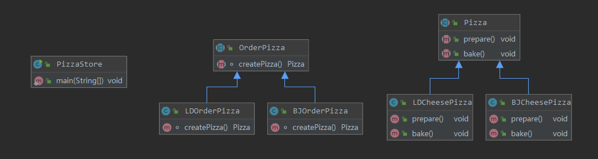

前言 在介绍了上一篇简单工厂模式 之后，我们也发现了不少问题：
简单工厂类集中了所有实例的创建逻辑，一旦这个工厂不能正常工作，整个系统将受到影响。
违背了开闭原则，如果要增加另一个种类的披萨时就不得不修改工厂类的逻辑，如果种类很多，就会造成工厂方法类中的逻辑过于复杂。
简单工厂模式由于使用了静态工厂方法，而静态方法不能被继承和重写，会造成工厂角色无法形成基于继承的等级结构。
为了解决上述问题，我们来学习一种另一种工厂模式：工厂方法模式。
基本介绍 工厂方法模式，又称工厂模式、多态工厂模式和虚拟构造器模式，通过定义一个创建产品对象的工厂接口，将产品对象的实际创建工作由具体子类来实现。
需求 在上一篇简单工厂模式中使用了pizza案例，这次继续使用。随着pizza的畅销，各种各样的pizza层出不穷，最近又出现了北京的cheesepizza和伦敦的cheesepizza。下面使用工厂方法模式完成这个需求。
结构 工厂方法模式的主要角色
序号
组成
关系
作用
1
抽象工厂(Abstract Factory)
OrderPizza
提供了创建产品的接口，调用者通过它访问具体工厂的工厂方法来创建产品。
2
具体工厂(ConcreteFactory)
BJOrderPizza、LDOrderPizza
主要是实现抽象工厂中的抽象方法，完成具体产品的创建。
3
抽象产品(Product)
Pizza
定义了产品的规范，描述了产品的主要特性和功能。
4
具体产品(ConcreteProduct)
BJCheesePizza、LDCheesePizza
实现了抽象产品角色所定义的接口，由具体工厂来创建，它同具体工厂之间一一对应。
类示意图 
完成需求 创建抽象工厂类 1 2 3 4 5 public abstract class OrderPizza abstract Pizza createPizza () }
创建抽象产品类 1 2 3 4 5 6 public abstract class Pizza public abstract void prepare () public abstract void bake () }
创建具体产品类 1 2 3 4 5 6 7 8 9 10 11 12 13 14 15 16 17 18 19 20 21 22 23 24 25 26 public class BJCheesePizza extends Pizza @Override public void prepare () System.out.println("准备BJCheesePizza。" ); } @Override public void bake () System.out.println("烘烤LDCheesePizza。" ); } } public class LDCheesePizza extends Pizza @Override public void prepare () System.out.println("准备LDCheesePizza。" ); } @Override public void bake () System.out.println("烘烤LDCheesePizza。" ); } }
创建具体工厂类 1 2 3 4 5 6 7 8 9 10 11 12 13 14 15 16 17 18 public class BJOrderPizza extends OrderPizza @Override Pizza createPizza () { return new BJCheesePizza(); } } public class LDOrderPizza extends OrderPizza @Override Pizza createPizza () { return new LDCheesePizza(); } }
调用者 1 2 3 4 5 6 7 8 9 10 11 public static void main (String[] args) LDOrderPizza ldOrderPizza = new LDOrderPizza(); Pizza ldPizza = ldOrderPizza.createPizza(); ldPizza.prepare(); ldPizza.bake(); BJOrderPizza bjOrderPizza = new BJOrderPizza(); Pizza bjPizza = bjOrderPizza.createPizza(); bjPizza.prepare(); bjPizza.bake(); }
执行结果 1 2 3 4 准备LDCheesePizza。 烘烤LDCheesePizza。 准备BJCheesePizza。 烘烤LDCheesePizza。
优缺点 优点
符合开闭原则，新增一种产品时，只需要增加具体产品类和相应的子类即可。
符合单一职责原则，每个具体工厂类只负责创建对应的产品。
不使用静态方法，可以形成基于继承的等级结构。
调用者只需要知道工厂子类名称就可以得到想要的产品，无需知道内部的细节。
缺点
添加新产品时，需要增加产品类和工厂子类，类的个数会成对增加，在一定程度上增加了系统的复杂度。
一个具体工厂只能创建一种具体产品。
应用场景 工厂方法模式通常适用于以下场景：
客户不关心创建产品的细节，只关心产品的品牌。
作为一种创建型模式，在任何需要生成复杂对象的地方，都可以使用工厂方法模式。
模式应用 JDK迭代器 Collection中的iterator方法用到了工厂方法模式。
1 2 3 4 5 6 7 8 9 10 11 12 13 public class JdkUse public static void main (String[] args) Collection<String> collection = new ArrayList<>(); collection.add("十里平湖霜满天，" ); collection.add("寸寸青丝愁华年。" ); Iterator iterator = collection.iterator(); while (iterator.hasNext()) { System.out.println(iterator.next()); } } }
迭代器是个接口 迭代器是集合专用的遍历方式，由集合对象调用iterator()方法而创建，常用于获取集合中对象元素。为什么把迭代器定义成接口呢？假设迭代器是个类，那么我们可以创建一个迭代器的对象，调用该类的方法实现集合遍历。但是java中存在各种各样的集合，而且数据结构不同，所以存储方式和遍历方式也是不同的，所以迭代器被定义成了接口。
无论是什么样的集合，都应该具备获取元素的操作，并且最好辅助于判断功能，所以就把hasNext和next方法抽取了出来，由Collection各自的子类去实现。
源码追踪 我们直接看看ArrayList的源码，可以看到在ArrayList类有个内部类实现了Iterator接口
1 2 3 4 5 6 7 8 9 10 11 12 13 14 15 16 17 18 19 20 21 22 23 24 25 26 27 28 public Iterator<E> iterator () return new Itr(); } private class Itr implements Iterator <E > int cursor; int lastRet = -1 ; int expectedModCount = modCount; public boolean hasNext () return cursor != size; } @SuppressWarnings ("unchecked" ) public E next () checkForComodification(); int i = cursor; if (i >= size) throw new NoSuchElementException(); Object[] elementData = ArrayList.this .elementData; if (i >= elementData.length) throw new ConcurrentModificationException(); cursor = i + 1 ; return (E) elementData[lastRet = i]; } ...... }


{kind=link}